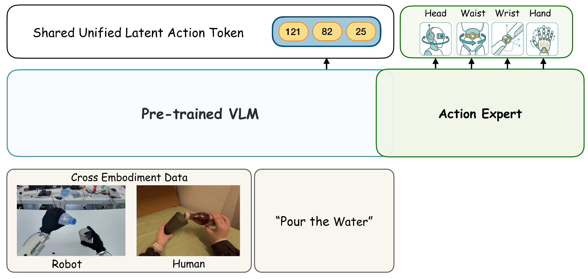
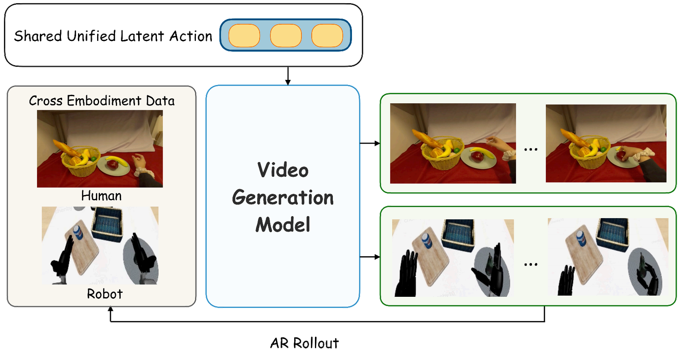

Scaling humanoid foundation models is bottlenecked by scarce robotic data. While massive egocentric human data offers a scalable alternative, bridging the cross-embodiment chasm remains a fundamental challenge. UniT establishes a unified physical language — one tokenizer that enables zero-shot transfer for both policy learning and world modeling.
Human demo → Humanoid executes unseen task
Human action → Humanoid video generation
Scaling humanoid foundation models is bottlenecked by scarce robot data. Massive human motion sequences provide a scalable alternative rich in physical interaction priors — but biomechanical and hardware differences create heterogeneous state-action spaces with mismatched degrees of freedom and control paradigms.
Complex kinematic solvers map human motions to specific robots case by case. Labor-intensive, unscalable, and retargeted actions often misalign with the original visual observations.
Co-training on mixed embodiment data end-to-end forces the model to fit fundamentally different action distributions simultaneously, often leading to embodiment-specific shortcuts rather than shared representations.
Relies exclusively on proprioceptive reconstruction. Without external visual grounding, these representations suffer from severe distribution shifts between humans and robots.
Infers intent directly from pixels, bypassing kinematic mismatches. But these representations are prone to entangling low-level appearance confounders (textures, lighting) and leave structural priors of human pose data underexploited.
While human and humanoid kinematics differ in structural DoFs and contain embodiment-specific noise, the physical outcomes of their intents share a consistent visual representation. Visual observations can therefore serve as a universal anchor to ground and align disparate kinematic spaces — filtering out visually unobservable artifacts while preserving embodiment-agnostic physical intent.
UniT functions as a cross-modal information bottleneck: it concurrently extracts temporal-visual, kinematic, and fused visuo-motor features, and enforces rigorous cross-reconstruction to distill the embodiment-agnostic physical intent.
A visual branch (IDM on frozen DINOv2 features) captures physical transitions; an action branch encodes embodiment-specific state and action chunks via per-embodiment MLPs; a fusion branch integrates both into a compact visuo-motor representation.
Every quantized token is decoded by both a visual decoder (FDM) and an action decoder. By forcing kinematic features to reconstruct visual transitions, heterogeneous actions are anchored to their physical consequences. Uncorrelated noise from either domain is discarded.
VLA-UniT predicts fusion-branch tokens as a structured cross-embodiment learning objective for VLMs. WM-UniT uses action-branch features as a universal conditioning interface for video generation.


We perform t-SNE analysis on human (EgoDex) and humanoid (RoboCasa GR1) samples to verify that UniT establishes a unified physical language — and that this alignment propagates into both downstream model internals.
In the raw action space, human and humanoid data form clearly separated clusters reflecting the inherent distribution gap between heterogeneous kinematics. After encoding through UniT, the visual-anchored cross-reconstruction successfully projects disparate action spaces into a shared manifold.
Mean-pooled last-layer vision-language features. The vanilla VLA maintains separated human/humanoid distributions, while VLA-UniT produces interleaved representations.
Mean-pooled last-layer cross-attention outputs. The vanilla WM exhibits fully disjoint clusters, whereas WM-UniT brings them into a single unified distribution.
UniT token prediction provides the VLM with a compact, visually-anchored learning objective that encodes physical intent. We evaluate on the RoboCasa GR1 benchmark (24 tabletop tasks, 50 episodes each) and a real-world full-body humanoid (IRON-R01-1.11, 50-DoF).
VLA-UniT achieves 66.7% overall success rate on RoboCasa GR1, surpassing FLARE (+11.7%) and the GR00T baseline (+18.9%).
With only 10% of training data, VLA-UniT (45.5%) already approaches GR00T trained on full data (47.8%).
Under the few-shot regime, we co-train VLA-UniT on robot data and EgoDex human demonstrations (27,419 pick-and-place trajectories), then fine-tune on robot data alone. Human data brings consistent improvements across both in-domain and all three OOD scenarios.
Deployed on IRON-R01-1.11 humanoid (50-DoF) with two tasks: Pick & Place (analogous to EgoDex basic_pick_place) and Pouring (bimanual). Five OOD axes test geometry, distractor, target, background, and combinational generalization.
We evaluate on a stacking task that is not covered by robot training demonstrations. Robot data only include pick-and-place of individual bowls, while EgoDex human videos contain stacking sequences performed with view switching and upper-body coordination.
WM-UniT conditions video generation on UniT's continuous pre-quantization features, providing a visually-grounded conditioning interface that replaces embodiment-specific raw actions. Evaluated via 10-step autoregressive rollouts over 10-second video generation.
WM-UniT achieves the strongest controllability on DROID (best EPE) while improving PSNR, SSIM, and LPIPS. WM-Action does not yield a similarly reliable gain, indicating that latent tokenization alone is insufficient — visual anchoring is the key factor.
| Method | PSNR ↑ | SSIM ↑ | LPIPS ↓ | FVD ↓ | EPE ↓ |
|---|---|---|---|---|---|
| Raw Action | 21.02 | 0.820 | 0.097 | 76.38 | 0.2662 |
| WM-Action | 20.86 | 0.819 | 0.102 | 80.30 | 0.2593 |
| WM-UniT | 21.32 | 0.823 | 0.095 | 76.44 | 0.2588 |
UniT provides a shared conditioning space that supports cross-embodiment dynamics modeling. Co-training on EgoDex and RoboCasa-GR1 consistently outperforms raw actions on both subsets. Pre-training on EgoDex human demonstrations further transfers physical dynamics to humanoid prediction.
| Dataset | Method | PSNR ↑ | SSIM ↑ | LPIPS ↓ | FVD ↓ | EPE ↓ |
|---|---|---|---|---|---|---|
| EgoDex | Raw Action | 24.84 | 0.800 | 0.164 | 171.37 | 0.706 |
| WM-UniT | 28.06 | 0.858 | 0.086 | 130.87 | 0.519 | |
| RoboCasa-GR1 | Raw Action | 13.45 | 0.590 | 0.259 | 237.13 | 0.558 |
| WM-UniT | 17.66 | 0.718 | 0.142 | 166.50 | 0.453 | |
| Configuration | PSNR ↑ | SSIM ↑ | LPIPS ↓ | FVD ↓ | EPE ↓ |
|---|---|---|---|---|---|
| WM-UniT w/o Human Pre-training | 16.34 | 0.678 | 0.168 | 180.51 | 0.478 |
| WM-UniT (Full) | 18.06 | 0.713 | 0.135 | 153.31 | 0.446 |
We directly test whether UniT tokens from one embodiment can condition video generation for the other — without any domain-specific adaptation. Gemini-3-Pro scores semantic, temporal, and geometric consistency (1–5). UniT preserves fine-grained action semantics, magnitude sensitivity, and temporal coherence across embodiments.
| Direction | Method | Semantic ↑ | Temporal ↑ | Geometric ↑ | Overall ↑ |
|---|---|---|---|---|---|
| Robot → Human | Raw Action | 2.96 | 3.12 | 2.74 | 2.92 |
| WM-UniT | 3.91 | 3.98 | 3.66 | 3.84 | |
| Human → Robot | Raw Action | 2.98 | 3.16 | 2.72 | 2.95 |
| WM-UniT | 3.28 | 3.43 | 3.09 | 3.27 | |
We validate two key claims: (1) both vision and action are needed, and (2) the two modalities must be explicitly aligned through cross-reconstruction. Ablation under the human-humanoid co-training setup (EgoDex + RoboCasa pre-train, RoboCasa fine-tune).
In-the-wild human motion capture data inevitably contains noise from sensor jitter and annotation artifacts. Drag the slider to inject Gaussian noise into EgoDex action trajectories and watch how each tokenizer degrades.
UniT demonstrates that a visual-anchored unified physical language can replace manual motion retargeting, serving both policy execution and world imagination within a single token interface.
The visual branch encodes physical transitions from observations alone — without paired action annotations — opening a path toward absorbing the vast reservoir of internet-scale video where humans perform diverse tasks without motor labels. Furthermore, UniT's dual interface enables a closed-loop possibility: policies propose latent actions, world models simulate their visual consequences, and the resulting imagined rollouts can flow back as reward signals for reinforcement learning or enable test-time planning through search over the latent space.